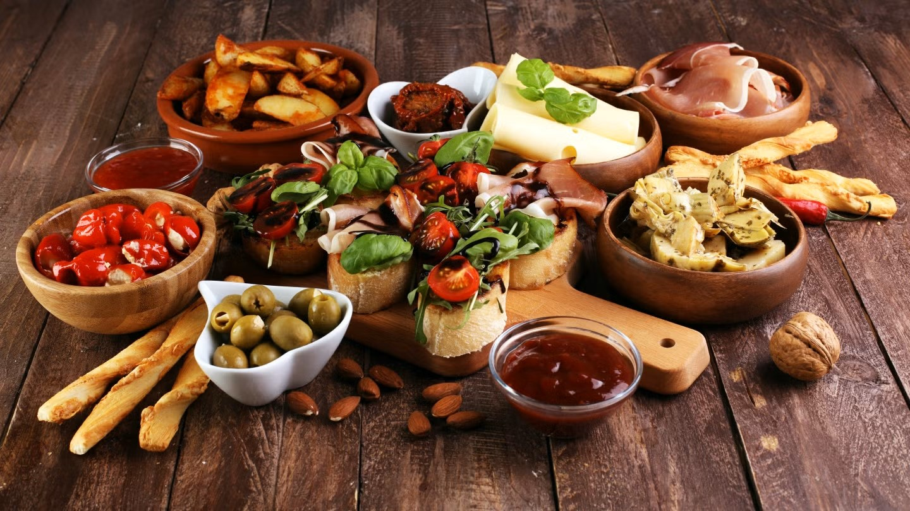

Facts
Wissen über Nährwerte, Sorten und Reife.

Nährwerte
- Fette: vor allem einfach ungesättigt
- Vitamine: K, E, B6, Folat
- Ballaststoffe: ~7 g pro 100 g
Tipp: Mit Zitrone beträufeln, damit das Fruchtfleisch hell bleibt.

Sorten
Hass (dunkle, raue Schale) und Fuerte (glatte, grüne Schale) sind verbreitet.
Hass
Fuerte
Bacon
Reed

Reife prüfen
- Avocado in die Hand nehmen.
- Sanft drücken – leicht nachgiebig = reif.
- Nicht drücken, wenn sie hart ist: einfach liegen lassen.